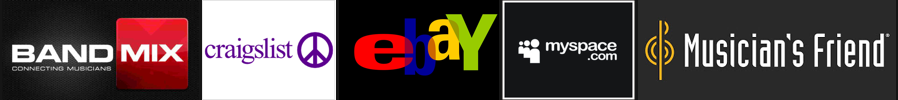

Bandtastic was my first project for Bloc.io. I was at my most disheveled, but I sure learned from the experience. I wasn't aware of how much I needed to document discoveries or maintain deliverables at this point, & I was really wrapped up in observing the role of different deliverables & how they worked together. It took about 7-8 months to go from the discovery phase to a full MVP prototype.
Bandtastic combines the ecommerce aspect of Craigslist & eBay, with the social media aspect of Myspace & Band Mix. I assumed the roles of Researcher, Strategist, Information Architect, & Visual Designer. I used Sketch, Balsamiq for lo-fi wires, Draw.io for flows, a handful of tools Google offers, & UserTesting.com provided videos of people testing the prototype.
I needed to connect musicians locally who want to buy or sell used instruments.
A used instrument bazaar that includes used inventory from major stores such as Guitar Center, & smaller stores such as Chicago’s Make’N Music.


After conducting some research through survey, I found that people wanted an app that dealt with buying & selling used gear, renting gear, & that they were wary of scammers on eBay & Craigslist.
The minimum viable product focused on adding your own gear to the market, searching, & the checkout process.

Competitive Analysis
BandMix
Nice landing page & hero
Clean browsing & search page
Well organized forum with search function
I dislike the tomato/orange color scheme
Account types very similar to Bandtastic
 Nice landing page & hero
Nice landing page & heroCraigslist
Very organized for so much text
About as good a use of whitespace as they can manage
Because there are SO many things to categorize & it's done in such a tight space, it seems inescapably cluttered
The look can be described as "cheap". Perhaps it’s light to favor quick loading times on mobile
The use of dropdown menus could help the clutter
eBay
Clean browsing & search function
Potential scams
Cluttered landing page
MySpace
NAV UI tucked away on the side
Sleek music player tucked on the bottom
VERY categorized people search
The news tiles on the landing page are just...endless, & seem randomly arranged
The Sign In/Up, & Search function whiting out the whole page is jarring
The album search can't combine "new releases/high rotation" with the genre choice
Musician’s Friend
I can scroll through the landing page very quickly & parse information properly. It's very clean & organized
Navigation is very simple & quick
Search has categories & subcategories
Obvious hero
Colors of buttons leave them easy to spot
Excellent use of whitespace to separate product/info
Craigslist is very plain & is basically a want ad. Their map seems like an afterthought. eBay has the used sales portion down, but it’s not targeting musicians. MySpace is basically musical advertising now, & BandMix is social media for musicians that want to become band members. Each also had aesthetic strengths I could pull from. All were well organized except MySpace, they all used white space well, & all but Craigslist had buttons that were easy to spot.
Personas pushed me to consider the motivations of a wide range of musicians. A touring independant musician & a music teacher would both benefit from finding some used gear near them, albeit for their own reasons.
 Information Architecture
Information Architecture
In order to get ready for wireframing, I started with some user stories, & then translated them into user flows. They really helped me project a pathway for the app.

Here are some Balsamiq wireframes of different sections in the app:

One mistake I made is that I glazed over the placeholders for my logo & user avatar in the top navigation. I used a B in a circle for the bandtastic logo & a smiley face where the user avatar would go. I made the decision very flippantly since these wireframes were for information architecture & arrangement was in the forefront of my mind.

I was pretty surprised when it confused people. I don’t remember the issue with the smiley face at this time, I just remember it caused confusion & was mentioned a couple times in the early user testing videos. Multiple people thought the B was supposed to be a back button, as it was on the top/left corner of the screen where a back button conventionally goes. I remember watching my users struggle & putting my hands on my head like I just blew up the chemistry lab. It was the first time I caught a mistake through user testing.
I threw together a logo to put in place of the B. I wanted something inviting & musical, so I decided on a hand with instrument fingers, & a b-flat in the center of the palm. I meant to revisit the idea to clean it up but did not get a chance. I did however, see how it could be altered to fit on different color backgrounds.
 Visual Design
Visual Design
One of the things I did for inspiration was to gather clips of other ecommerce sites on a moodboard. It helped to see other apps use of color contrast & hierarchy.

Style tiles are for when a moodboard is too vague and a comp is too literal. Style tiles establish a direct connection with actual interface elements without defining layout. - “styletil.es”

I used style tiles to see how colors & text would look paired up. At this point, I was really just getting into typography, so I was looking for some way to choose one font over another since a handful seemed potentially appropriate. I ended up staring at different combinations for quite some time.
For typography, it seemed like a very subjective decision. It took quite some time, & in the end was based off of feel, readability, & the display font had to contrast the main one.

In the past before I learned about color theory, I had been very liberal with my use of bold colors that step on each other, so I wanted something simple that did a proper job. I knew I wanted friendly, inviting, trustworthy colors, so I chose blue, with some inspiration from Mega Man. I began with 2 shades of blue, a bold & a light baby blue, & 3 shades of black/grey.

Of course now, people were missing giant buttons because my “affirmative” button color didn't have the baby blue to contrast against.

I just happened to be learning to trade FOREX through BabyPips.com at the time, & that site is a monochromatic green. A round of testing let me know that green buttons did the job.

Here are some major iteration comparisons:
 Dash Search
Dash Search
 Search Results
Search Results
 Search Map
Search Map
 Cart
Cart
I also learned about Atomic Design & made a little system. It definitely helped when adding or editing multiple elements.

There were a few things that I’d do differently given the time allotted & experience. I would’ve hand sketched more rough drafts before going into Balsamiq.
I think I’ll use Sketch for wireframes next time instead of Balsamiq, or at least, not Balsamiq. The actual visual style of Balsamiq seems like it might be distracting. Now that I not only know but have experienced the purpose of wireframes, I’d prefer something that I can make look more plain.
The logo was done in a quite a hurry. I would have done a bit more smoothing out, & played with the palm being flat facing up, in a more inviting position.
I think the most important things I got out of this project were experiencing the testing process & experiencing each of these phases feed into the next.